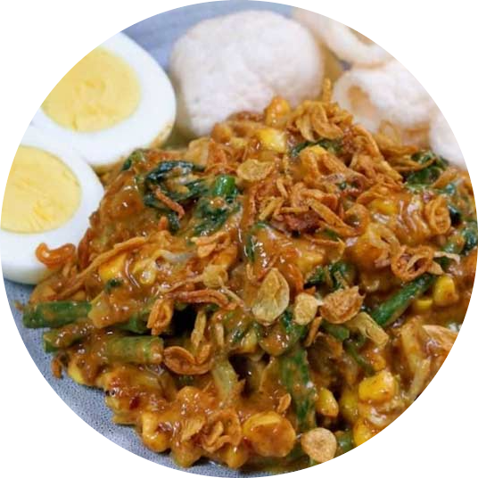

Gado-Gado
Gado-gado merupakan salah satu kuliner khas Betawi. Gado-gado adalah makanan yang terdiri atas sayur-sayuran, kentang, tempe, tahu, telur rebus, dan lain-lain yang diberi bumbu sambal kacang dan sebagainya.

Bahan-Bahan
Lontong, potong-potong
4 telur, rebus
Taoge, seduh air panas
1 ikat kacang panjang, potong-potong
1/2 kol, iris
2 ikat daun selada
1 mentimun, potong-potong
2 kotak tahu, potong-potong
1 papan tempe, potong-potong
Kerupuk
Bahan Bumbu Gado-gado:
200 gr kacang tanah
6 cabai merah besar
6 bawang putih
800 ml air
1 saset santan instan (65ml)
Gula
Garam
Cara Membuat
1. Cuci dan rebus kacang panjang dan kol, tiriskan. Goreng tempe, tahu, dan kerupuk sampai kecokelatan, tiriskan;
2. Seduh taoge dengan air panas, tiriskan. Potong-potong dan siapkan semua bahan isian atau sayuran lainnya, sisihkan;
3. Goreng kacang tanah, cabai merah, dan bawang putih. Angkat lalu tiriskan;
4. Kemudian blender sampai halus. Masukkan air dan santan. Masak bumbu kacang dengan api kecil sampai keluar minyak dari kacang dan berubah warna. Cek rasa;
5. Tata lontong, semua sayuran, tahu, dan tempe. Siram dengan bumbu kacang. Lengkapi dengan telur rebus dan kerupuk.